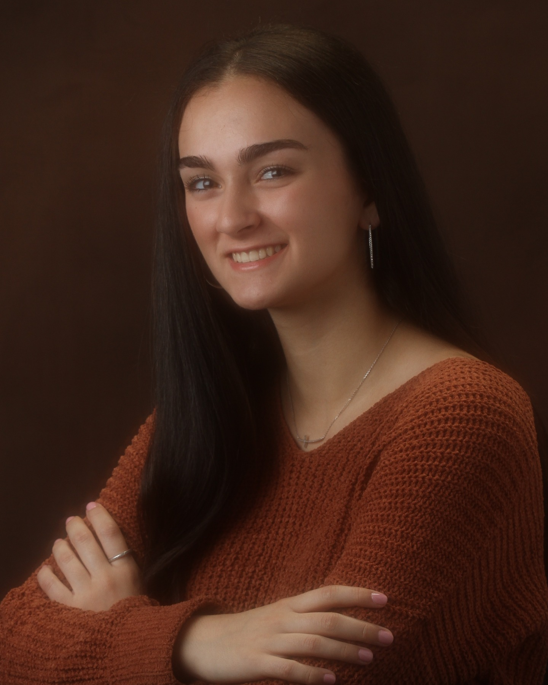

Tulane University · New Orleans
Jasmine
Shirmohammad
Neuroscience student · aspiring physician
I am building a future in medicine through research, clinical service, artificial intelligence literacy, and cross-cultural communication.

01 / About
A dedicated student driven by curiosity, service, and connection.
Jasmine Shirmohammad is a neuroscience student at Tulane University whose work is shaped by a deep interest in the relationship between scientific discovery and compassionate care. Drawn to questions about the brain, behavior, and health, she is building a foundation in research while preparing for a career in medicine.
Her clinical experience in a nursing-home setting has made the human side of healthcare especially meaningful to her: showing up consistently, listening carefully, and recognizing the dignity and individuality of every person. Through volunteer work with Special Olympics and older-adult communities, she has also seen how advocacy, inclusion, and connection can change the way people experience care.
At Tulane, Jasmine is pursuing a major in neuroscience with minors in artificial intelligence literacy and Spanish, alongside rigorous science coursework and ongoing research involvement. She brings curiosity, warmth, strong communication, and a thoughtful, collaborative approach to every environment she enters. Her goal is to become a physician who not only understands the science behind illness, but also makes patients feel genuinely seen.
02 / Questions That Interest Me
The questions behind my work.
These are the problems I want to keep exploring—through research, medicine, and thoughtful use of technology.
How can AI improve medicine without losing the human side of healthcare?
How can research translate into better patient care?
How do language and culture affect healthcare experiences?
03 / Work
Evidence of how I think and contribute.
Research
Build from questions
I bring sustained research experience and an interest in neuroscience and cognition. I approach problems by asking precise questions, examining evidence, and communicating what matters clearly.
AI & medicine
Use technology thoughtfully
Through artificial intelligence literacy, I am developing the judgment to evaluate tools critically: what they make possible, where they fall short, and how they can support—not replace—human care.
Communication
Make complex ideas useful
Scientific writing, Spanish study, and collaborative coursework sharpen my ability to explain ideas clearly to different audiences and move work forward with a team.
04 / Experience
Learning what care looks like in practice.
Clinical care
Presence is part of the work.
Clinical work in a nursing-home setting has taught me to listen closely, communicate with respect, and show up consistently for people whose needs are often complex.
Community
Inclusion changes outcomes.
Volunteer work with Special Olympics and older-adult communities has strengthened my commitment to advocacy, dignity, and healthcare that accounts for the whole person.
Academics
Depth across disciplines.
Neuroscience, AI literacy, and Spanish bring complementary lenses to my work: biological mechanisms, responsible technology, and cross-cultural communication.
05 / Skills
What I bring to a team.
- Scientific writing and research communication
- Qualitative and quantitative problem-solving
- Artificial intelligence literacy
- Empathetic, person-centered service
- Spanish and cross-cultural communication
- Reliable collaboration and thoughtful leadership
Let’s connect
Interested in working together?
I welcome opportunities to learn, contribute, and build work that makes a difference.